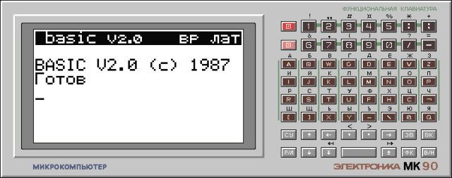
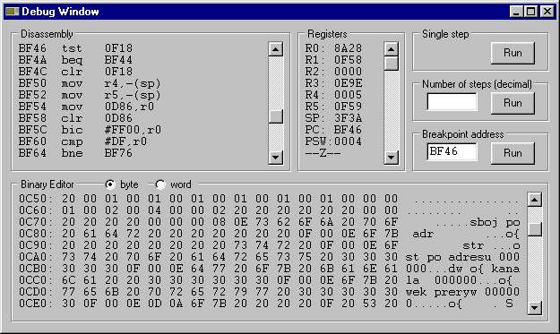

MK-90 emulator
The program emulates a PDP-11 compatible CPU and uses a ROM dump from the original calculator, therefore it should function almost exactly like the real one.
It works on PC-compatible machines with Microsoft Windows operating system.
Program version 17, updated 2019/11/30
 mk90emsr.zip - Delphi sources
mk90emsr.zip - Delphi sources
mk90emex.zip - compiled executable
Usage: extract the files into an empty directory, then run the program mk90.exe
mk90ro10.zip - ROM image of an earlier
MK-90 version with BASIC V1.0
Usage: replace the file rom.bin
Note: after the ROM change the memory modules should be reformatted with the command INIT.


Disassembly box
- On entry, the starting address matches the Program Counter.
It can be modified by clicking on the address in the first line.
Accepted values: $0000..$3FFE for the RAM area and $4000..$FEFE for the ROM area.
New value must be confirmed with Enter.
- Access to the I/O area $E800..$EBFE can disturb communication with the SMP memory modules.
- After clicking on a disassembled instruction, a new instruction can be typed.
As with the starting address, pressing Enter accepts the changes.
The changes aren't saved upon program termination.
Binary Editor box
- The binary editor box allows viewing/changing the RAM contents only.
- It is possible to modify the starting address and the RAM contents by clicking on them.
Enter accepts the changes.
Registers box
- The contents of the registers can be modified by clicking on them.
Enter accepts the changes.
- The bottom line in the register box shows bits TNZVC of the PSW register.
Program execution control
- Closing the debugger windows resumes the program execution without tracing.
- Pressing the button [Run] in the Single step group box executes a single machine code instruction without servicing of the interrupts.
- To execute a specified number of machine code instructions type the required value to the field in the Number of steps group box, then press the associated [Run] button.
- The Breakpoint group box allows to specify condition that determine when the program execution should be interrupted.
Currently it only compares the Breakpoint Address typed in the field with the Program Counter.
When they match, the program execution is stopped and the debugger window reappears.
Some parameters of the emulator can be customised by editing the mk90.ini file with any text editor.
Description of the contents of this file:
CpuSpeed=1000- This setting controls the emulated CPU execution speed (number of instructions executed every 10ms).
RamSize=16384- This setting defines the physical size of emulated RAM.
It is intended for test purposes only!
The default value shouldn't be modified, because the system supports only fixed RAM size of 16kB.
Since the entire address space is occupied, the extra RAM takes precedence over the ROM containing the test routines.
Radix=16- This setting changes the base of the numeral system used by the debugger (16 for the hexadecimal system, 8 for the octal system).
SaveRom=0- Value other than 0 invokes on program exit a file dialog that allows the user to save the modified ROM image.
To uninstall the emulator, simply delete the directory where it was installed.
The program doesn't modify anything outside its installation directory.
- Significant part of the code is based on the PDP-11/03 emulator written by Ovsienko V.A.
- The disassembler is based on the program pinst.c written by Martin Minow.
- The program includes a freeware component ThreadedTimer developed by Carlos Barbosa.
- The program emulates the 1806ВМ2 CPU which may slightly differ from the actual one (mostly in the interrupt system and in the non-user mode).
- The sound isn't supported yet.
- The serial transfer rate settings are ignored.
- The small battery backed RAM is deliberately emulated as volatile memory.
- BASIC V1.0 - failure of the memory module self test.
The problem is unrelated to the emulator, but caused by a bug in the original system software.
It can be fixed by replacing the faulty instruction at the address $EEF8 with DEC 33CA.
mk90util.zip - file size: 19kB, sources and executables, DOS and Windows (in a DOS window)
The archive contains two separate programs for each BASIC version:
tosmp10.com - for BASIC version 1.0
tosmp20.com - for BASIC version 2.0
The utility copies a list of BASIC programs in ASCII format (cyrillic characters are expected to be encoded in Windows-1251) specified in the command line to the MK-90 cartridge memory image.
Example:
tosmp10.com prog1.bas [prog2.bas prog3.bas ...]
As a result an output file SMP0.BIN is created, which can be used by the emulator or written into a real cartridge.
To load a program in BASIC 2.0 use the command LOAD with the parameter A, for example:
LOAD "PROG1.BAS",A